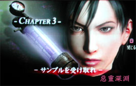
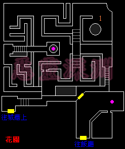
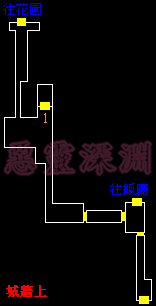
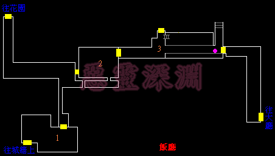

|
惡靈古堡～惡靈古堡４----The Another Order─Chapter3
|
|
 收取樣本 地圖上的紫色圓點●表示高價寶物的位置，標綠色的道具則是過關必須的重要道具。
 與Leon相遇之後，於編號1的位置開始，這裡有武器商人，還有強力的附火藥弓箭，可以搭配武器商人賣的弓槍使用。 花園中沒有重要道具，只有高價寶物５連真珠のバングル（ ５連珍珠的手鐲），一段時間之後，有一批邪教徒進入，其中穿著紅色 服裝的那隻，打倒後可得到3000ptas。房間的床頂有高價寶物金の装飾の入った香水瓶（以金子作裝飾的香水瓶）。 現在先不要往飯廳，先回城牆上拿個重要道具。
 城牆上編號1的小房間，門無法打開，只能使用勾繩槍進入，一進去就有個邪教徒撲過來，要趕緊對付。小房間中有重要道具宝飾 のある砂時計（珠寶裝飾的沙漏），到手後同樣使用勾繩槍出來。 玩家可以選擇從花園往飯廳，或直接從城牆上過去。
 在編號1的房間有許多道具，還有武器商人，記得帶恢復藥。 進入編號2後，房間中央的鐵籠降下，鐵爪男出現。鐵籠門上的鎖很難擊破，最好用強力武器迅速擊破逃出，以免被攻擊。現在必 須將珠寶裝飾的沙漏放入鐵籠中央的空寶箱中，才可以打開門繼續前進。打倒鐵爪男可得到ルビー（紅寶石）。 在編號3看到Leon和邪教徒戰鬥的場面，因為無法和Leon碰面，所以是不能過去另一邊的。橋的下方有高價寶物豪華な装飾のチェス 盤（豪華裝飾的西洋棋盤）。過橋時前後出現邪教徒，小心被夾攻。 往大廳之後，看到Luis被殺事件，本章就結束了。
疑難解答
金の装飾の入った香水瓶（以金子作裝飾的香水瓶） 10000ptas ルビー（紅寶石） 10000ptas 豪華な装飾のチェス盤（豪華裝飾的西洋棋盤） 13000ptas 未經許可禁止轉載連結 |
惡靈深淵Biohazard Abyss http://98.to/coolbio